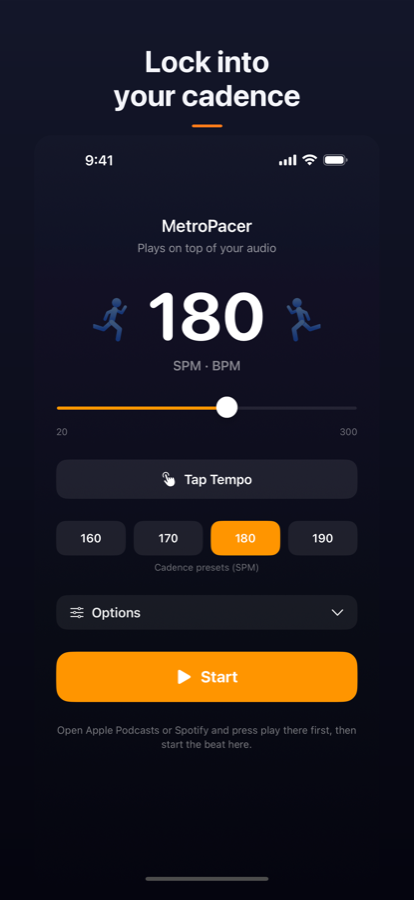
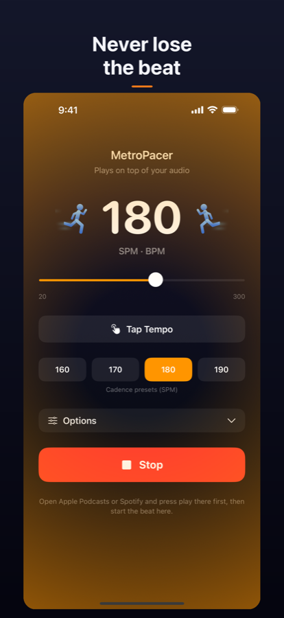
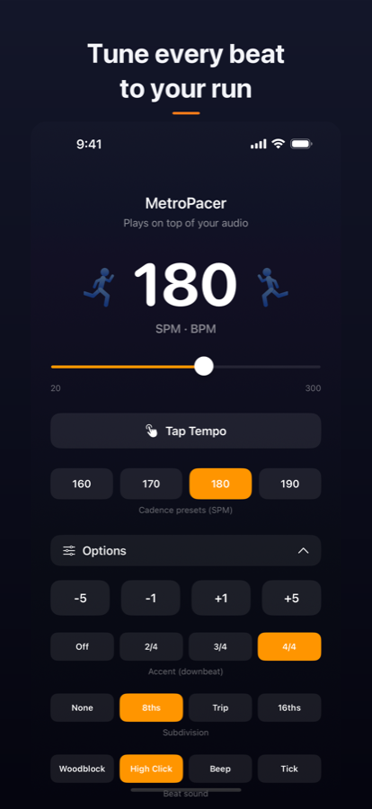
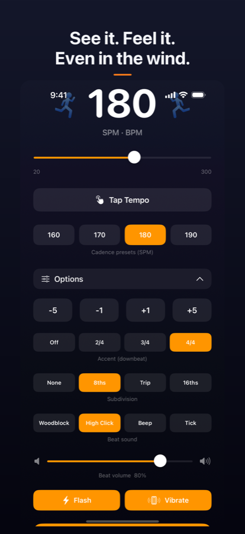

Run to a beat. Hit your cadence. Every stride.
Download on the App Store SupportFor iPhone · iOS 18 or later · $0.99




The beat layers on top of Apple Music, Spotify, Podcasts, and more. Start your audio, then start the beat. It keeps going with the screen locked.
One-tap presets at 160, 170, 180, and 190 SPM. Tap Tempo matches your natural stride. Fine-tune by ±1 or ±5, or sweep from 20 to 300.
Four click sounds, downbeat accents in 2/4, 3/4, or 4/4, and eighth, triplet, or sixteenth subdivisions. Independent beat volume sits the click against your mix.
When wind or traffic drowns out the click, Flash pulses the screen and Vibrate gives a haptic tap on every step.
Your settings stay on your device and never leave it. Read the privacy policy.